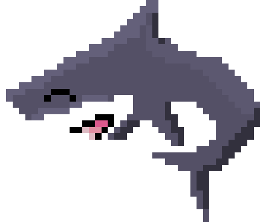

めだころ
いつも物を作っている人です
<<< 自己紹介 / Introduction >>>
こんにちは! 日本住みのただのサメ好きな学生です。
ゼンゼロ、楽しいよね みんなもやろう!
いろいろと、物を作っています。modとか、ゲームとか....
<<< できる言語 / CAN LANGUAGES >>>
- JavaScript
- C#
- Python
- HTML/CSS
<<< 開発中 / DEVELOPING >>>
- ChronosFall [自作ゲーム]
- 突如として発生した"時空崩壊"により、世界の大部分が崩壊した近未来。しかし、一部の地域は奇跡的に崩壊を免れ、"時間断層"として存在し続けていた。そこでは、生き残った人類がひっそりと生活を営んでいる。
- 時間断層に設立された公安、「STPS」の主人公として、時空崩壊の謎を追い、数年前に失われた弟との再会を目指す。
- Technifter Partners [MOD]
- マインクラフト内に電気で動く機械、テクニフター(Technifter)を追加し、敵を一掃したりすることができます(未定)
<<< 連絡方法 / CONTACTS >>>
<<< 好きなこと(もの) / LIKES >>>
- サメ
- ゲーム
- Zenless Zone Zero
- Minecraft
- プログラミング
- 作曲